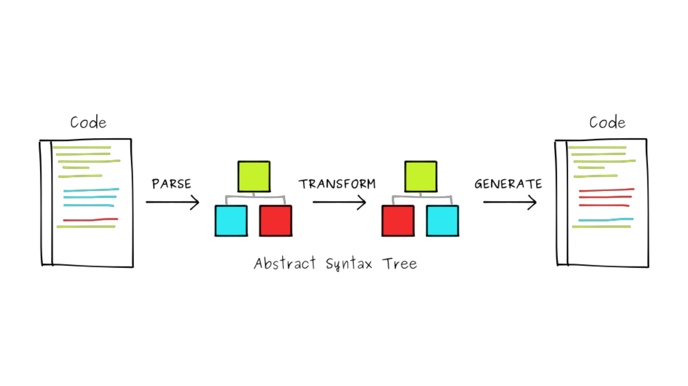

1. babel基本配置和自定义插件编写
1.1. babel基本配置
const myPlugin = require("./plugin")
module.exports = {
presets: [
[
"@babel/preset-env", // es 语法编译
{
useBuiltIns: "usage", // 按需添加 polyfills
corejs: "3",
targets: {
browsers: ["ie >= 12"] // 浏览器版本
}
}
]
],
plugins: [
myPlugin,
[
"@babel/plugin-transform-runtime",
{
"corejs": 2
}
]
]
}
1.1.1. 目前babel官网维护的只有四个 presets：
- @babel/preset-env 自动管理浏览器版本 和 es 语法转换。
- @babel/preset-flow：编译js代码静态类型检查器flow
- @babel/preset-react：编译react语法
- @babel/preset-typescript：编译ts语法
1.1.2. core-js 版本：
core-js 2：这是较早期的 core-js 版本，用于填充 ECMAScript 6 和 ECMAScript 7 中引入的特性，以及一些附加的功能。它广泛用于许多项目，但随着时间的推移，更现代的版本逐渐取代了它。
core-js 3：这是 core-js 的较新版本，旨在提供更好的性能和模块化。它支持 ECMAScript 6+ 的特性，并且按需引入 polyfills，以减小生成的代码大小。core-js 3 是目前在许多项目中常用的版本。
core-js 4：core-js 4 是 core-js 的下一个重大版本，它将进一步改进性能和模块化，以适应 JavaScript 生态系统的变化。截止到我知道的时间，core-js 4 还处于开发中，尚未正式发布。
1.1.3. @babel/plugin-transform-runtime 的作用
代码中的辅助函数不再以全局变量的形式存在。相反，它们被导入自@babel/runtime模块，并且以模块范围内的方式使用，避免了全局污染问题。
举例说明
- 源码
// example.js
class MyClass {
constructor(name) {
this.name = name;
}
async greet() {
return `Hello, ${this.name}!`;
}
}
const obj = new MyClass('Alice');
obj.greet().then((message) => {
console.log(message);
});
- before
"use strict";
function _classCallCheck(instance, Constructor) {
if (!(instance instanceof Constructor)) {
throw new TypeError("Cannot call a class as a function");
}
}
var MyClass = /*#__PURE__*/function () {
function MyClass(name) {
_classCallCheck(this, MyClass);
this.name = name;
}
var _proto = MyClass.prototype;
_proto.greet = /*#__PURE__*/function () {
var _greet = /*#__PURE__*/_asyncToGenerator( /*#__PURE__*/regeneratorRuntime.mark(function _callee() {
return regeneratorRuntime.wrap(function _callee$(_context) {
while (1) {
switch (_context.prev = _context.next) {
case 0:
return _context.abrupt("return", "Hello, " + this.name + "!");
case 1:
case "end":
return _context.stop();
}
}
}, _callee, this);
}));
function greet() {
return _greet.apply(this, arguments);
}
return greet;
}();
return MyClass;
}();
var obj = new MyClass('Alice');
obj.greet().then(function (message) {
console.log(message);
});
- after
"use strict";
var _interopRequireDefault = require("@babel/runtime/helpers/interopRequireDefault");
var _asyncToGenerator2 = require("@babel/runtime/helpers/asyncToGenerator");
var _classCallCheck2 = require("@babel/runtime/helpers/classCallCheck");
var _createClass2 = require("@babel/runtime/helpers/createClass");
function _createForOfIteratorHelperLoose(o, allowArrayLike) {
var it = typeof Symbol !== "undefined" && o[Symbol.iterator] || o["@@iterator"];
if (!it) return;
if (typeof it === "function" && it.prototype) it = it.prototype;
if (typeof it === "object" && it !== Array.prototype) return { __iterator: it };
if (allowArrayLike && it === Array.prototype.entries) return { __iterator: it };
return it;
}
var MyClass = /*#__PURE__*/function () {
function MyClass(name) {
(0, _classCallCheck2.default)(this, MyClass);
this.name = name;
}
(0, _createClass2.default)(MyClass, [{
key: "greet",
value: function () {
var _greet = (0, _asyncToGenerator2.default)( /*#__PURE__*/regeneratorRuntime.mark(function _callee() {
return regeneratorRuntime.wrap(function _callee$(_context) {
while (1) {
switch (_context.prev = _context.next) {
case 0:
return _context.abrupt("return", "Hello, " + this.name + "!");
case 1:
case "end":
return _context.stop();
}
}
}, _callee, this);
}));
function greet() {
return _greet.apply(this, arguments);
}
return greet;
}()
}]);
return MyClass;
}();
var obj = new MyClass('Alice');
obj.greet().then(function (message) {
console.log(message);
});
1.2. babel自定义插件编写
1.3. 文档地址
https://github.com/jamiebuilds/babel-handbook/blob/master/translations/zh-Hans/README.md
1.4. babel 编译原理
经典流程图

babel 主要模块及作用
const babel = require("@babel/core") // babel.parseSync 将文件读取的代码转成 AST
const template = require("@babel/template").default // 将手写的模板代码转成 AST
const traverse = require("@babel/traverse").default // traverse 遍历AST树并进行替换、添加、删除操作
const generate = require("@babel/generator").default // 将 AST 还原成代码
demo 代码：在某句代码前插入一段新的代码
const path = require('path')
const fs = require('fs')
const babel = require("@babel/core")
const template = require("@babel/template").default
const generate = require("@babel/generator").default
const traverse = require("@babel/traverse").default
const Path = entryPath.join(__dirname, 'dist/app.js')
const content = fs.readFileSync(entryPath, 'utf-8')
const appJsAst = babel.parseSync(content, {sourceType: 'script'})
const buildRequire = template(`
const taroApp = require("./taro/app.js");
`)
const ast = buildRequire()
traverse(appJsAst, {
ExpressionStatement(path) {
const calleePath = path.get('expression.callee')
if (calleePath.isIdentifier({ name: 'App' })) {
const prevPath = path.getPrevSibling()
const isVariableDeclaration = prevPath.isVariableDeclaration()
const firstDeclarationPath = isVariableDeclaration && prevPath.get('declarations.0')
const isTaroApp = firstDeclarationPath && firstDeclarationPath.node.id.name === 'taroApp'
console.log(firstDeclarationPath.node.id.name)
if (!isTaroApp) {
path.insertBefore(ast)
}
}
}
})
const { code: appJsCode } = generate(appJsAst, { sourceMaps: false })
const destPath = path.join(__dirname, 'dist/new.js')
fs.writeFileSync(destPath, appJsCode)
@babel/traverse 方法详解
ast-explorer 网址：https://lihautan.com/babel-ast-explorer
const traverse = require("@babel/traverse").default
traverse(appJsAst, {
ExpressionStatement(path) {
const calleePath = path.get('expression.callee')
if (calleePath.isIdentifier({ name: 'App' })) {
const prevPath = path.getPrevSibling()
const isVariableDeclaration = prevPath.isVariableDeclaration()
const firstDeclarationPath = isVariableDeclaration && prevPath.get('declarations.0')
const isTaroApp = firstDeclarationPath && firstDeclarationPath.node.id.name === 'taroApp'
console.log(firstDeclarationPath.node.id.name)
if (!isTaroApp) {
path.insertBefore(ast)
}
}
}
})
// ExpressionStatement
// prevPath.get('declarations.0') 虽然是数组，但还是只能使用点操作，prevPath.get('declarations[0]') 无效
// path.getPrevSibling() 获取兄弟节点
// prevPath.isVariableDeclaration() 节点判断
// firstDeclarationPath.node.id.name === 'taroApp' node 不能少
// path.insertBefore(ast) 节点插入
1.5. babel 和 polyfill 的区别
babel 默认只转换新的 JavaScript 语法（syntax），而不转换新的 API。比如：箭头函数转化成普通函数。
polyfill 将新的 API 用 es5 的方法实现。比如：Promise、Array.of
module.exports = {
presets: [
[
'@babel/preset-env',
{
useBuiltIns: 'usage', // 使用的才引入
corejs: 3,
},
],
],
};
1.6. SWC 相对于 Babel 之所以更快，有以下几个主要原因：
Rust 编写：SWC 是用 Rust 编写的，Rust 是一种系统级编程语言，以其性能和内存管理的安全性而闻名。Rust 具有出色的性能特性，因此 SWC 在编译速度上具有优势。
并行编译：SWC 具有并行编译的能力，可以充分利用多核处理器。这意味着它可以同时处理多个文件，从而加速整个编译过程，特别是在大型项目中表现出色。
更少的内存开销：SWC 针对内存开销进行了优化，相对于 Babel 使用更少的内存。这有助于避免在大型项目中出现内存问题，并提高了稳定性。
高度优化的代码生成：SWC 生成的 JavaScript 代码非常紧凑和高效，它对代码进行了深度优化，包括减小变量名、减少不必要的操作等。这可以减小生成的代码的体积，提高代码执行性能。
针对现代特性的优化：SWC 针对现代 JavaScript 特性进行了优化，特别是针对 ECMAScript 6+ 和 TypeScript。它可以更有效地识别和转换这些特性，而不需要像 Babel 那样复杂的插件和配置。
Babel 是一个非常灵活的工具，它可以通过各种插件和配置来满足各种需求，但这种灵活性可能会导致一些性能开销。相比之下，SWC 更专注于性能和速度，因此在某些场景下可能会更快。